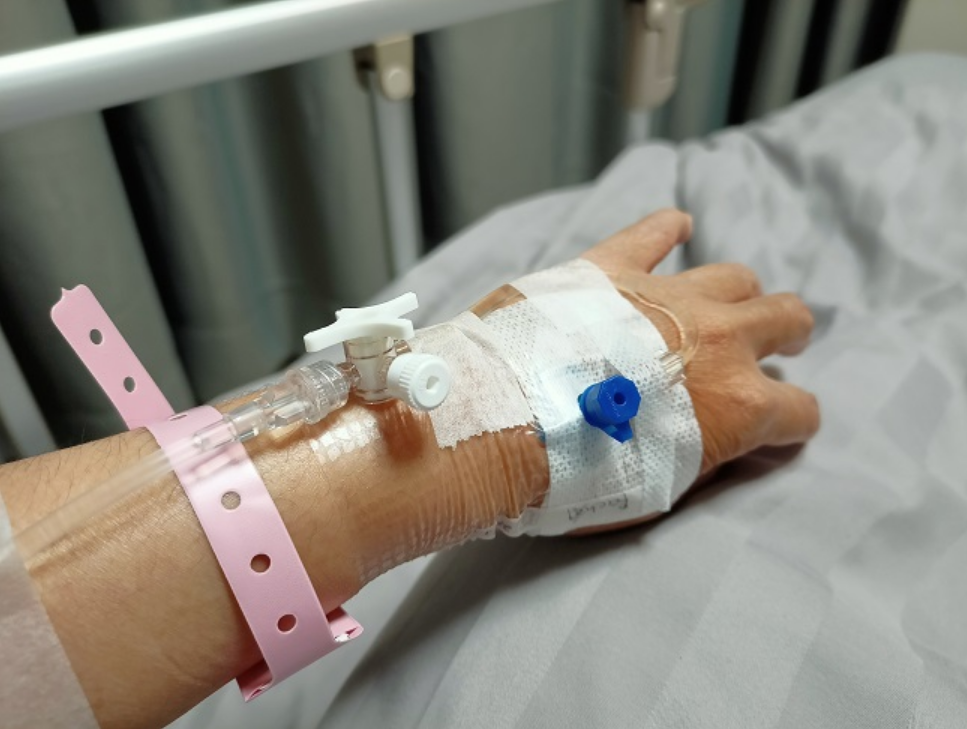

USG (ULTRASONOGRAFI) DALAM KEHAMILAN, TIDAK SEBATAS BERAT DAN JENIS KELAMIN JANIN
Ultrasonografi (USG) telah digunakan selama lebih dari 4 dekade kehidupan untuk mengevaluasi kondisi janin dan rahim pada pasien obstetri atau terkait kehamilan. Dimulai dari pertanyaan awal, apakah ada kehamilan? Apakah ada janin? Apakah janin tunggal ataupun kembar? Berapa usia kehamilan dan berat janin? Dimana lokasi plasenta? Hingga saat ini ultrasonografi dijadikan alat utama untuk mendiagnosis kelainan bawaan/kongenital pada janin, memprediksi komplikasi kehamilan seperti plasenta akreta, sampai mendeteksi anemia pada janin. Dalam melakukan USG pada kehamilan, tujuan utama dokter adalah untuk memfasilitasi asuhan antenatal yang terbaik pada ibu dan janin.
Pemeriksaan USG dapat dilakukan sejak awal kehamilan atau trimester 1, sejak usia kehamilan 5 minggu hingga 13 minggu 6 hari. Pada USG trimester pertama, tidak jarang kita melakukan USG yang dimasukkan melalui lubang vagina (transvaginal) untuk melihat posisi kantong gestasi, serta mengetahui anatomi rahim dan adneksa (bagian rahim yang meliputi indung telur (ovarium), saluran telur (tuba Fallopii), dan jaringan ikat (ligament) yang mengelilinginya). Pada usia awal kehamilan atau trimester pertama, pemeriksaan USG dilakukan untuk mengetahui hal-hal berikut yaitu, untuk mengetahui apakah kehamilan berkembang atau tidak, menentukan apakah kehamilan dalam kandungan (intrauterin) atau tidak, menentukan jumlah janin, menentukan usia kehamilan, serta melihat anatomi janin di awal kehamilan.
Penentuan usia kehamilan merupakan hal yang penting dilakukan saat melakukan pemeriksaan USG pada trimester 1. Berdasarkan International Society of Ultrasound in Obstetric and Gynecology, USG di usia kehamilan 10 minggu hingga 13 minggu 6 hari dapat memberikan data usia gestasi hingga taksiran waktu persalinan yang akurat. Dalam melakukan USG lanjutan, kita dapat memakai USG trimester 1 untuk patokan usia kehamilan ataupun taksiran waktu persalinan. Dengan itu, diharapkan apabila bayi terlalu besar ataupun terlalu kecil bahkan dikatakan pertumbuhan janin terhambat, dapat terdeteksi.
Secara rutin, pemeriksaan USG trimester dua atau yang biasa disebut USG mid-trimester dilakukan di usia 18 - 22 minggu kehamilan. Pemeriksaan USG dilakukan untuk menentukan berat dan ukuran janin (biometri janin), kesejahteraan janin, aliran darah plasenta ke janin, jumlah air ketuban dan letak plasenta, panjang serviks pada pasien dengan riwayat kelahiran prematur spontan, hingga skrining organ janin dimulai dari kepala hingga ekstremitas janin. Skrining organ melalui pemeriksaan USG yang detail sering disebut sebagai USG fetomaternal oleh orang awam. Pemeriksaan tersebut dilakukan oleh dokter spesialis obstetri dan ginekologi yang mempunyai kompetensi untuk melakukan USG detail mengenai skrining kelainan organ.
Dalam menentukan berat janin, dilakukan USG meliputi pengukuran biparietal diameter (jarak antar kedua pelipis kepala), head circumference (lingkar kepala), abdominal circumference (lingkar perut), dan femur diaphysis length (panjang tulang paha). Dengan melakukan pengukuran tersebut dapat ditentukan berat janin apakah sesuai dengan usia kehamilannya, lebih dari usia kehamilannya, kurang dari usia kehamilannya, ataupun pertumbuhan janin terhambat. Pada kehamilan normal, USG di luar asuhan antenatal rutin dilakukan minimal 3 kali, selama trimester pertama 1 kali, trimester kedua (antara 18-22 minggu) 1 kali dan trimester ketiga 1 kali. Namun, pada beberapa kondisi, USG dapat dilakukan lebih dari itu, bahkan untuk memonitor kesejahteraan janin, dapat dilakukan 2 minggu hingga 1 bulan sekali.
ALASAN INKUBATOR DIBUTUHKAN OLEH BAYI PREMATUR
Inkubator merupakan unit mandiri yang berbentuk kotak dan ditutupi dengan kubah plastik bening. Unit ini menyediakan lingkungan yang aman dan suhu yang terkendali untuk bayi yang membutuhkan perawatan di ruang NICU.
Nah, kelahiran prematur merupakan salah satu kondisi yang membuat seorang bayi membutuhkan inkubator. Sebab, bayi yang lahir secara prematur terutama sebelum 37 minggu, dapat mengalami beberapa masalah kesehatan.
Salah satunya adalah kesulitan mengatur suhu tubuh mereka, karena bayi prematur tidak memiliki banyak lemak, membuat mereka rentan terhadap hipotermia. Hipotermia merupakan kondisi ketika tubuh kehilangan panas lebih cepat daripada yang bisa dihasilkannya. Kondisi tersebut dapat menyebabkan komplikasi pada bayi seperti oksigen jaringan yang rendah, kesulitan bernapas, dan pertumbuhan yang lambat.
Nah, salah satu alasan mengapa bayi prematur membutuhkan inkubator adalah untuk mencegah hipotermia. Sebab, inkubator dapat membantu bayi prematur untuk mempertahankan suhu tubuh optimal. Kontrol suhu pada inkubator bayi dapat diatur secara manual atau otomatis berdasarkan suhu bayi. Selain itu, inkubator bayi juga bertindak sebagai pelembab udara, yang dapat membantu menjaga bayi dari beberapa masalah kulit.
Fitur lain dari inkubator bayi adalah unit ini dapat membantu menghalangi kebisingan. Pasalnya, ruang NICU dapat menjadi tempat yang sibuk dan bising. Nah, inkubator dapat melindungi bayi dari kebisingan dan cahaya langsung yang dapat mengganggu mereka dan menyebabkan gangguan tidur, peningkatan tekanan darah, dan stres yang tidak perlu.
Selain bayi prematur, beberapa bayi yang memiliki kondisi kesehatan tertentu juga membutuhkan inkubator. Berikut adalah beberapa contoh kondisi tersebut:
- Memiliki Gangguan Pernapasan
Terkadang bayi yang baru lahir memiliki cairan atau mekonium di paru-parunya. Hal ini dapat menyebabkan infeksi dan ketidakmampuan untuk bernapas dengan baik. Selain itu, bayi yang baru lahir mungkin juga memiliki paru-paru yang belum berkembang sempurna, sehingga yang memerlukan pemantauan dan oksigen ekstra.
- Mengalami Penyakit Kuning
Beberapa jenis inkubator biasanya memiliki lampu khusus untuk membantu mengurangi jaundice, yaitu menguningnya kulit dan mata bayi. Sebab, penyakit kuning pada bayi baru lahir sering terjadi karena kadar bilirubin yang tinggi dalam tubuhnya. Bilirubin sendiri merupakan pigmen kuning yang dihasilkan selama pemecahan normal sel darah merah.
Itulah alasan mengapa bayi prematur membutuhkan inkubator. Salah satu alasan mengapa bayi prematur membutuhkan inkubator adalah untuk mencegah hipotermia. Sebab, inkubator dapat membantu bayi prematur untuk mempertahankan suhu tubuh optimal.
Kendati demikian, penggunaan inkubator tak hanya diperuntukkan bagi bayi prematur, tetapi juga bayi yang memiliki kondisi kesehatan tertentu saat lahir. Salah satunya seperti bayi yang mengalami jaundice atau penyakit kuning saat lahir.
Memastikan kalau kesehatan bayi yang baru lahir merupakan hal penting demi menunjang tumbuh kembangnya. Sebab, bayi yang baru lahir rentan mengalami berbagai gangguan kesehatan karena kekebalan tubuhnya yang belum stabil. Karena itu, jika ibu memiliki bayi yang baru lahir, pastikan untuk secara rutin memeriksakan kesehatannya.
PEMASANGAN INFUS, INI YANG HARUS ANDA KETAHUI

Pemasangan infus adalah prosedur untuk memasukkan selang ke pembuluh darah di tangan. Tujuannya adalah untuk mengalirkan cairan infus, transfusi darah, albumin, atau obat.
Pemasangan infus diutamakan pada kondisi darurat, seperti dehidrasi berat, infeksi parah, sakit kritis, atau perdarahan. Hal ini karena dokter perlu memasukkan cairan dan obat ke dalam tubuh pasien dengan cepat guna mencegah komplikasi.
Pemasangan infus juga dilakukan pada pasien yang sulit minum obat, misalnya karena muntah-muntah, atau untuk memberikan obat yang tidak tersedia dalam bentuk minum.
Tujuan dan Indikasi Pemasangan Infus
Tujuan pemasangan infus adalah untuk mengalirkan cairan infus atau obat ke dalam pembuluh darah di tangan. Selain itu, pemasangan infus juga dapat dilakukan untuk transfusi darah.
Pemasangan infus bisa dilakukan kepada pasien yang dirawat di rumah sakit, klinik, atau bahkan di rumah. Umumnya, pemasangan infus di rumah bertujuan untuk mengobati kondisi pasien yang memerlukan obat suntik secara berkala.
Peringatan dan Larangan Pemasangan Infus
Secara umum, tidak ada larangan tertentu untuk pemasangan infus. Pasien juga tidak perlu berpuasa sebelum menjalani prosedur ini.
Perlu diketahui, jarum infus tidak dapat dipasang di area tubuh yang mengalami luka terbuka, infeksi, atau peradangan.
Sebelum Pemasangan Infus
Tidak ada persiapan khusus yang perlu dilakukan sebelum pemasangan infus. Meski begitu, pasien bisa menggunakan pakaian longgar atau yang bagian lengannya mudah disingkap oleh petugas medis.
Prosedur Pemasangan Infus
Tahap-tahap yang dilakukan oleh dokter atau perawat pada pemasangan infus adalah:
- Mencuci tangan, kemudian mengenakan sarung tangan steril
- Meraba tangan pasien, untuk menentukan area pembuluh darah yang akan dipasangi infus
- Memasang tali pembendung (tourniquet) di atas pembuluh darah yang akan ditusuk jarum
- Membersihkan area kulit yang akan dipasang infus menggunakan kapas beralkohol
- Memasukkan jarum infus ke pembuluh darah yang sudah ditentukan
- Melepaskan jarum, kemudian menghubungkan selang ke cairan infus, obat, atau kantong darah
- Merekatkan plester pada selang infus ke lengan agar tidak bergeser jika pasien bergerak
Setelah Pemasangan Infus
Setelah pemasangan infus, dokter akan memastikan cairan, obat, atau darah, masuk dengan tepat dan tidak ada efek samping yang timbul. Selanjutnya, dokter akan menyesuaikan tetesan cairan atau darah dari kantong ke pembuluh darah.
Jika ada obat lain yang perlu dimasukkan, dokter bisa menyuntikkannya ke lubang yang ada di infus. Pemberian obat juga dapat dilakukan menggunakan alat infuse pump agar dosisnya lebih akurat.
Pasien disarankan untuk tidak terlalu banyak menggerakkan area tubuh yang diinfus, agar infus tidak bergeser dan berisiko tersumbat.
Jika terlalu banyak menggerakkan area yang diinfus, darah bisa terlihat naik ke selang infus. Akan tetapi, kondisi ini tidak berbahaya dan bisa mereda jika lengan yang diinfus kembali ke posisi semula.
Selang maupun jarum infus perlu diganti setiap 4 hari sekali atau lebih cepat, sesuai dengan kondisi pasien.
Komplikasi Pemasangan Infus
Pemasangan infus dapat menimbulkan nyeri dan rasa tidak nyaman di lengan yang dipasangi infus. Segera beri tahu dokter atau perawat jika setelah pemasangan infus muncul keluhan berikut:
- Demam
- Nyeri, bengkak, atau memar, di area infus
- Kulit di area infus berwarna kemerahan dan teraba hangat
- Pembuluh darah membengkak dan teraba keras ketika disentuh
- Posisi infus bergeser
- Infus merembes atau macet